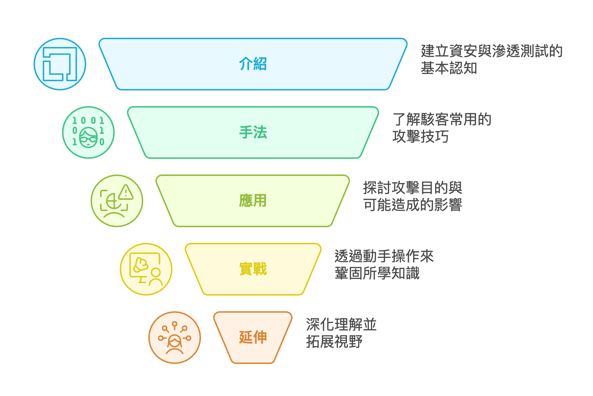

網站滲透
歡迎來到網站滲透教學素材包！本系列旨在為對資訊安全有興趣的初學者（特別是國中至高中生）提供一個清晰、結構化的學習起點。
在這裡，你不需要具備高深的技術背景，我們將用最直接、易懂的方式，帶你認識網站滲透的核心概念、常見手法與基本流程。準備好踏入白帽駭客的世界，學習如何保護網路安全了嗎？
網站滲透介紹
何謂網路安全 (Cybersecurity)
網路安全，或稱資訊安全 (Information Security)，是指保護電腦系統、網路、程式與資料，免於遭受未經授權的存取、攻擊、損壞或洩漏的一系列技術與實踐。
它的目標是確保資訊的三個核心要素，稱為 CIA Triad機密性 (Confidentiality)、完整性 (Integrity)、可用性 (Availability) 的縮寫，是資訊安全的基石。：
- 機密性 (Confidentiality): 確保資料只被授權的使用者存取。
- 完整性 (Integrity): 確保資料在儲存或傳輸過程中，沒有被未經授權地修改。
- 可用性 (Availability): 確保授權使用者在需要時，能夠順利存取資料與使用服務。
何謂網站滲透測試 (Web Penetration Testing)
網站滲透測試是一種經過授權的模擬攻擊，目的是為了評估一個網站應用程式的安全性。執行滲透測試的專家（稱為滲透測試人員或白帽駭客）會使用與惡意攻擊者相同的工具和技術，來尋找並利用系統中的安全漏洞。
這麼做的主要目的並非造成破壞，而是：
- 識別安全漏洞：在真正的攻擊者發現它們之前，找出系統的弱點。
- 評估漏洞風險：分析漏洞可能造成的業務衝擊與損害程度。
- 提供修補建議：向開發團隊提出具體的修復方案，以強化整體安全性。
常見網站滲透流程
一個標準的網站滲透測試通常會遵循以下幾個階段，這有助於系統化地找出潛在風險。
- 偵察 (Reconnaissance): 這是資訊收集階段。測試人員會盡可能地收集目標網站的公開資訊，例如：使用的技術框架、伺服器類型、子網域、開發人員聯絡方式等。
- 掃描 (Scanning): 使用自動化工具掃描目標網站，以尋找已知的漏洞、開放的通訊埠 (Ports) 或不安全的服務配置。
- 獲取存取權 (Gaining Access): 在這個階段，測試人員會嘗試利用前兩階段發現的漏洞來攻擊系統。例如，透過 SQL Injection一種攻擊手法，攻擊者將惡意的SQL語法注入到網站的輸入欄位中，以欺騙資料庫執行非預期的指令。 來控制資料庫。
- 維持存取權 (Maintaining Access): 成功滲透後，測試人員可能會嘗試安裝後門 (Backdoor) 或提升權限，以模擬長期潛伏的攻擊者，確認系統是否能偵測到這類行為。
- 清除痕跡 (Covering Tracks) 與產出報告 (Reporting): 測試結束後，移除所有測試過程中留下的檔案或修改，並撰寫一份詳細的報告，說明發現的漏洞、風險等級與修補建議。
網站滲透手法種類說明
網站的滲透手法有很多，這裡只舉了幾個簡單的例子說明。
Cross-Site Scripting (XSS, 跨站腳本攻擊)
XSS 是一種客戶端 (Client-side) 的攻擊手法。攻擊者將惡意的 JavaScript 腳本注入到一個可信的網站中，當其他使用者瀏覽該頁面時，這段惡意腳本就會在使用者的瀏覽器上執行。
與 SQL Injection 攻擊伺服器不同，XSS 的主要目標是網站的其他使用者。
常見類型：- 儲存型 XSS (Stored XSS): 惡意腳本被儲存在網站的資料庫中（例如：留言板、使用者個人資料）。每當有使用者瀏覽到含有此腳本的頁面時，就會觸發攻擊。
- 反射型 XSS (Reflected XSS): 惡意腳本包含在一個 URL 連結中。攻擊者需要誘騙受害者點擊這個連結，腳本才會在受害者的瀏覽器上執行。
檔案上傳漏洞 (File Upload Vulnerability)
許多網站提供檔案上傳功能，例如更換頭像、上傳附件等。如果網站沒有對上傳的檔案類型、大小、內容做嚴格的檢查，攻擊者就可能上傳惡意的檔案，例如一個Web Shell一個網頁形式的後門程式，攻擊者可以透過瀏覽器遠端執行伺服器上的指令，完全控制網站。。
攻擊流程：- 攻擊者找到網站的檔案上傳功能。
- 攻擊者製作一個偽裝成圖片檔（如：`shell.jpg.php`）但實際上是 PHP 程式的 Web Shell。
- 網站後端檢查機制可能只檢查了副檔名的一部分 (如 `.jpg`)，或根本沒有檢查，因而允許檔案上傳。
- 攻擊者找到上傳後檔案的 URL 路徑（如 `uploads/shell.jpg.php`）。
- 透過瀏覽器訪問該 URL，伺服器會將其當作 PHP 程式執行，攻擊者便取得了網站伺服器的控制權。
網站滲透應用舉例
了解攻擊手法後，我們來看看惡意攻擊者（駭客）會如何利用這些漏洞來達成他們的目的。
目的：竊取敏感資料
這是最常見的攻擊目的之一。駭客的目標是獲取高價值的敏感資訊。
- 使用手法：
SQL Injection - 攻擊目標：儲存使用者資料的資料庫。
- 可能結果：
- 竊取所有使用者的帳號、密碼、電子郵件、電話號碼、信用卡資訊等。
- 將竊得的資料在黑市販售牟利。
- 利用這些資料進行進一步的詐騙或身分盜用。
目的：癱瘓服務 (Denial of Service)
有時駭客的目的不是偷東西，而是讓網站無法正常運作，對企業造成營運中斷的損失。
- 使用手法：複雜的
SQL Injection或其他消耗資源的漏洞。 - 攻擊目標：網站伺服器或資料庫伺服器的運算資源 (CPU, Memory)。
- 可能結果：
- 執行一個極度複雜或需要大量運算的查詢，使資料庫伺服器資源耗盡，無法回應正常請求。
- 導致網站變慢，甚至完全崩潰，所有使用者都無法訪問。
- 這種攻擊有時是為了勒索，或作為更大規模攻擊的聲東擊西手段。
目的：散播惡意軟體或釣魚
駭客可以利用受信任的網站作為跳板，來攻擊該網站的使用者。
- 使用手法：
Cross-Site Scripting (XSS)或檔案上傳漏洞 - 攻擊目標：瀏覽該網站的普通使用者。
- 可能結果：
- (XSS) 在頁面中插入一個假的登入框，竊取使用者的帳號密碼（釣魚）。
- (XSS) 將使用者重新導向到一個惡意網站，誘騙其下載病毒或勒索軟體。
- (檔案上傳) 將惡意檔案上傳至伺服器，並將連結散播出去，讓其他使用者下載中毒。
準備好挑戰了嗎？
在你的終端機（或 CMD）輸入以下指令，
前往 CTF 練習平台開始解題！
這是一串 Docker 指令，輸入後會下載並執行一個包含挑戰題目的網站映像檔。執行後，請在瀏覽器開啟 url 開始挑戰！
網站滲透題目講解 (Write-Up)
延伸閱讀
OWASP Top 10
了解全球公認最關鍵的十大網站應用程式安全風險，這是每位網站安全學習者的必讀清單。
PortSwigger Web Security Academy
一個免費的線上學習平台，提供大量高品質的網站安全實驗室，讓你親手練習各種攻擊手法。
Hack The Box
一個知名的線上滲透測試練習平台，提供各種難度的虛擬靶機，讓你挑戰真實世界的攻防場景。
CTFtime
追蹤全球 CTF (Capture The Flag) 賽事的網站，你可以在這裡找到即將舉行的比賽並組隊參加。
TryHackMe
一個對初學者非常友善的學習平台，透過引導式的學習路徑和房間，一步步教你駭客技術與防禦知識。
MITRE ATT&CK® Framework
一個基於真實世界觀察的全球性知識庫，收錄了駭客使用的各種戰術和技術，是了解攻擊者行為的權威指南。